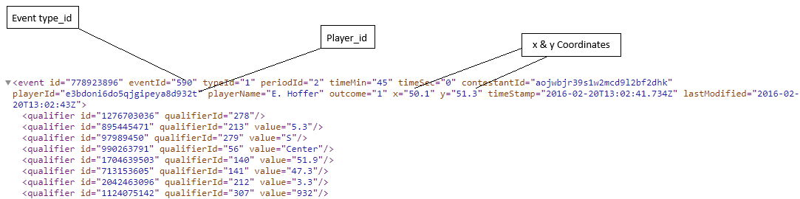
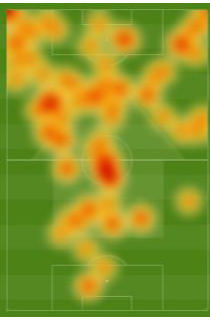
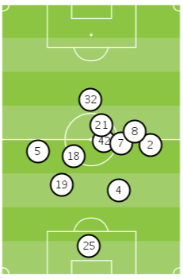
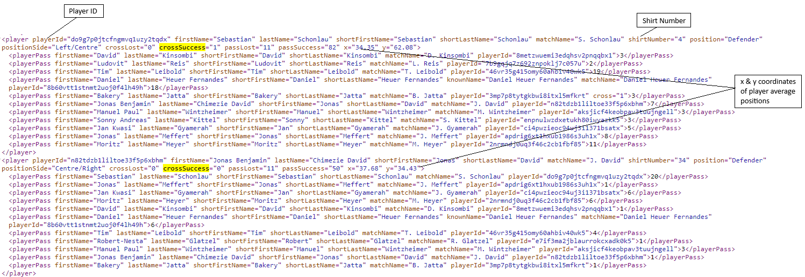
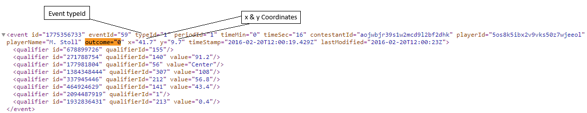
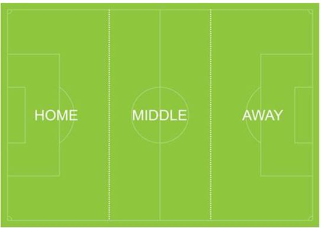
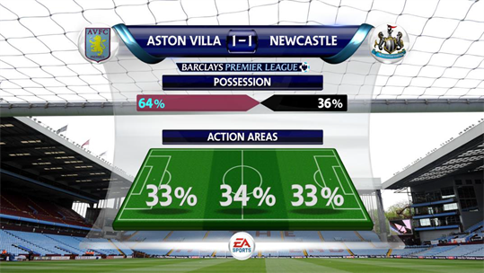
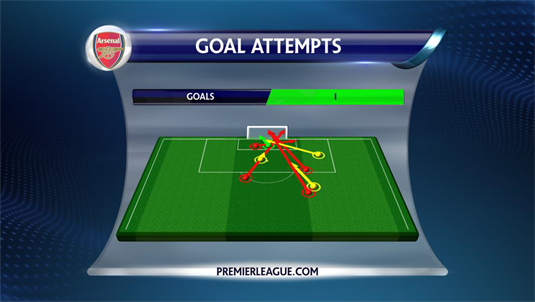
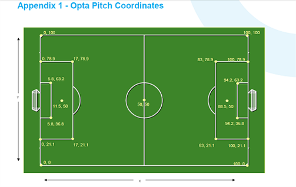

<?xml version="1.0" encoding="utf-8" ?>
<!DOCTYPE html>
<html lang="en"></html>
<head>
  <meta http-equiv="Content-Type" content="text/html; charset=utf-8" />
  <meta name="generator" content="Adobe RoboHelp 2020" />
  <title> Broadcast Graphic Guidelines</title>
  <style>
    /*<![CDATA[*/
    @import url('https://fonts.googleapis.com/css?family=Roboto+Condensed%3A300%2C400%2C700%7CRoboto%3A300%2C400%2C500%2C700&ver=5.4.1');
    /*]]>*/
  </style>
  <meta name="template" content="../../assets/masterpages/book.htt" />
</head>
<body>
  <p><button onclick="myFunction()">Last modified on</button></p>
  <p><span id="lastUpdated"></span></p>
  <script>
    function myFunction() {
      //<![CDATA[
      const date = new Date(document.lastModified);
      const options = {
        year: 'numeric',
        month: 'long',
        day: '2-digit',
        timeZone: 'UTC'
      };
      const formattedDate = date.toLocaleDateString('en-US', options);
      document.getElementById("lastUpdated").textContent = alert(formattedDate);
    }
    //]]>
  </script>
  <h1><span class="light-grey"></span> Broadcast Graphic Guidelines</h1>
  <div class="lead-1">
    <h3>Player Heat Map</h3>
    <ul>
      <li>Plot the location of players activity on the virtual pitch or tied to the ‘real’ pitch</li>
      <li>Available live? YES</li>
      <li>SDAPI feed used: MA3</li>
      <li>Event type_IDs required:</li>
      <li>Both Outcomes (1 and 0): 1,2,3,4,7,8,10,11,12,13,14,15,16,41,42,45,49,50,51,52,53,54,55,56,60,61,69,72,73,74</li>
      <li>Outcome 0 only: 44,59,67</li>
    </ul>
  </div>
  <p></p>
  <p></p>
  <h3>Player Pass Map</h3>
  <ul>
    <li>Plot the location of players’ passes on the virtual pitch</li>
    <li>Available live? YES</li>
    <li>SDAPI feed used: MA3</li>
    <li>Event type_IDs required: all type 1 excluding where qualifiers 2, 107 &amp; 123 are present to comply with SDAPI definitions which exclude crosses, throw-ins and goalkeeper throws.</li>
    <li>Outcome &#39;1&#39; = successful pass, outcome &#39;0&#39; = unsuccessful pass</li>
    <li>X &amp; Y = starting co=ordinates of the pass</li>
    <li>Qualifier 140 = Pass end X coordinate</li>
    <li>Qualifier 141 = Pass end Y coordinate</li>
    <li>Display successful as blue arrows, unsuccessful as red.</li>
    <li>Function to select ‘all passes’ or just ‘successful’ or ‘unsuccessful’</li>
  </ul>
  <p></p>
  <p></p>
  <h3>Team Average Formations</h3>
  <ul>
    <li>Plot the average positions of players in a match</li>
    <li>Available live? YES</li>
    <li>SDAPI feed used: MA4 or MA3</li>
  </ul>
  <p></p>
  <p><strong>Option A – MA4 feed:</strong></p>
  <ul>
    <li>Event type_IDs required: n/a</li>
    <li>X &amp; Y = average position per player</li>
    <li>Use circular marker / jersey icon with player numbers to show position on the pitch.</li>
  </ul>
  <p></p>
  <p><strong>Option B – MA3 feed:</strong></p>
  <ul>
    <li>Event type_IDs required:</li>
    <li>1,2,3,4,7,8,10,11,12,13,14,15,16,41,42,45,49,50,51,52,53,54,55,56,60,61,69,72,74 (both outcomes) &amp; event type_ID = 44,59,67 (outcome = 0 only)</li>
    <li>Exclude events where qualifier_id types 107 and 6 are present.</li>
    <li>X &amp; Y = position of each event (per player). Take all relevant events per player and calculate average position based on x &amp; y co-ordinates.</li>
    <li>Use circular marker / jersey icon with player numbers to show position on the pitch</li>
  </ul>
  <p></p>
  <h3>Player Touch Map</h3>
  <ul>
    <li>Plot the location of players touches on the virtual pitch</li>
    <li>Available live? YES</li>
    <li>SDAPI feed used: MA3</li>
    <li>Event type_IDs required: 1,2,3,7,8,10,11,12,13,14,15,16,41,42,50,54,61,73, 74 (both outcomes) and event type_ID = 4 (outcome = 1)</li>
  </ul>
  <p></p>
  <p></p>
  <h3>Team Attacking Zones</h3>
  <ul>
    <li>Segregate pitch into 3 zones to show where teams focus their attacks</li>
    <li>SDAPI feed used: MA3</li>
    <li>Available live? YES</li>
    <li>Event type_IDs required:</li>
    <li>1,2,3,4,6,7,8,10,11,12,13,14,15,16,41,42,45,49,50,51,52,53,54,55,56,60,61,69,72,74 (both outcomes) &amp; event type_ID = 44,59 (outcome = 0 only)</li>
    <li>Only take events where X is greater than or equal to 50.</li>
    <li>X &amp; Y = location of the event which falls within one of three pitch zones.</li>
    <li>X greater than or equal to 50 &amp; Y:</li>
    <li>Left zone &gt;= 66.7</li>
    <li>Central zone &gt;33.3 and &lt;66.7</li>
    <li>Right zone &lt;=33.3</li>
  </ul>
  <p></p>
  <h3>Pitch Zones (Territory)</h3>
  <p>Feed used – MA3 or MA5</p>
  <p>MA5:</p>
  <p>&lt;PossessionWave Type=&quot;TerritorialThird&quot;&gt;<br />
    &lt;Overall&gt;<br />
    &lt;Away&gt;23.5&lt;/Away&gt;<br />
    &lt;Home&gt;25.5&lt;/Home&gt;<br />
    &lt;Middle&gt;51.0&lt;/Middle&gt;</p>
  <p>The diagram below shows how the pitch thirds are designated. The home third is always on the left and the away third is always on the right regardless of the end each team is attacking.</p>
  <p></p>
  <p>Example:</p>
  <p></p>
  <h3>Shot Graphic</h3>
  <p>Feed used – MA3</p>
  <ul>
    <li>Event type_IDs required: 13,14,15,16</li>
    <li>X &amp; Y co-ordinates of the event indicate where the shot originated. The finishing position of the shot is included in the event’s qualifiers.</li>
    <li>For types 13, 14 &amp; 16, qualifier 102 is the y co-ordinate of where the ball crossed the line and you can assume x is always 100 (i.e. the goal line).</li>
    <li>For shots that don’t reach the goal line (event type 15), qualifiers 146 &amp; 147 will give the endpoint of the shot.</li>
    <li>If you wish to show the height of a shot, you can use the z co-ordinate (qualifier ID 103).</li>
  </ul>
  <p>Example:</p>
  <p></p>
  <p></p>
  <p></p>
</body>
</html>